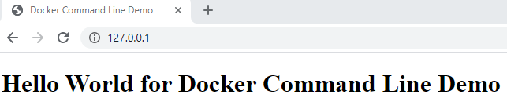

Docker Servers
One of the benefits of Docker, is that resources are dynamically allocated. In other words, resources are only allocated as needed. This allows us to efficiently run programs and even complete web hosting servers within a Docker image.
Below you will find a tutorial on how to install an Apache web-hosting server on a Docker image. The tutorial assumes you have Docker installed and have opened a Powershell or Terminal Prompt, but will walk you through all other required steps.
Tutorial
Step 1) Install and Launch Ubuntu
To install Ubuntu run the "docker pull ubuntu" command as seen below.
This will pull the latest Ubuntu image from Docker and install a blank Ubuntu image within a new container image. The creation of this new image can be verified by running the "docker images" command seen below.
This command shows us all Docker images present but in this case we are specifically looking to verify the presence of the "ubuntu" Repository that has the "latest" Tag.
Finally, we can launch the newly created Ubuntu image via the "docker run -it ubuntu:latest /bin/bash" command below.
This command will launch the newly created container image, ubuntu:latest (repositoryName:tagName), at the /bin/bash directory within the image.
Step 2) Prepare and Install Apache
Before we install Apache itself, we will want to make sure all of the packages pre-installed in the Ubuntu image are up to date. To do this, we will run the "apt-get update" command.
This will go through and automatically update any packages that need updates. Once that is complete, we can actually install the two packages we need. First will be "apt-get install apache2" command.
Next we will install the VIM text editor via the "apt-get install vim" command.
At this point, we now have all of the required tools to run our own webserver. If you would like to learn how to commit a snapshot of the environment as it exists as a separate container, please continue to read the Optional section below. If you would like to continue on without this, please proceed to Step 3.
Whichever path you prefer, type the exit command to continue.
Optional) Commit to a New Docker Image
To commit your ubuntu repository to a new image, you will want to first verify the current image Container ID. To this do, run the "docker ps -a" command.
In the example above, the Container ID is 6ab705341f04. We can now run the following command to
create a new repository:
"docker commit [containerID] [repositoryName]"
In the example above, the Container ID is still 6ab705341f04 and the new Repository Name is ubuntu-my_apache2.
Step 3) Mount a Local Storage Location to Docker Image
To mount a local storage location to your Ubuntu container, you will want to run the following command:
"docker run -it -p 127.0.0.1:80:80 -v [localFilePath]:/var/www/html [repositoryName] /bin/bash"
As you may notice, there are two very important parameters in the command that are within brackets, [], labeled localFilePath and repositoryName. These variables will be dependant on your local file system and the Docker repository name that you have chosen.
If you have not completed the Optional step in Step 2, your repository name will be ubuntu.
If you have completed the Optional step in Step 2, you will want to use your new Repository Name.
In the example command above, the important variables are as follows:
localFilePath: C:\Users\rnunes\Documents\NJIT\IS601\DockerFolder
repositoryName: ubuntu-my_apache2
Step 4) Add Your HTML Files and Start Server
At this point you can add HTML files to your local storage location using any type of file explorer. Once HTML files are present on your local storage location folder, you can run the following command to start your Apache Webserver: "service apache2 start"
Now you can open a web browser on your local machine and navigate to 127.0.0.1 (your local host) to verify everything is running.
Optional) Create a Sample Index.html File
Optionally, if you do now yet have any HTML files but would like to verify that your Apache Webserver is running, we can create a temporary index.html file.
First, navigate to the appropriate file location with the "cd /var/www/html/" command.
Now that we are in the appropriate location, we can open the VIM text editor with the "vi index.html" command.

Press the "i" key to enter Insert Mode. You should see "-- INSERT --" across the bottom of the screen. Once in Insert Mode, you can now enter the following HTML code.
Feel free to change the title and h1 text anything you desire. Whenever the file is complete, press the "ESC" key to exit Insert Mode. Type ":wq" to write to file and quit the VIM editor.
You can run the following command to start your Apache Webserver: "service apache2 start"
Now you can open a web browser on your local machine and navigate to 127.0.0.1 (your local host) to verify everything is running.
If you need to update your index.html file you should be able to open the locally saved file using any editor like NotePad++.